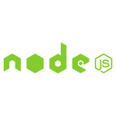
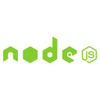

Projects
Scalable point-and-click adventure game built with React.
Aims to help children living with high-functioning autism learn
social skills.
3 week final project at Founders and Coders for
Autsera.com
, which I then took on as a paid freelance project, to refine the
UI and mobile responsiveness.
Installable as a PWA.
A web app that facilitates collaborative, intimate discussion when
sharing web content.
Ongoing collaborative project that was born at the
HackThePress Hackathon
in October 2019.
Built with Node.js, Express.js, and Handlebars.js templating.
I was responsible for most of the node.js backend and
the frontend, while my teammate worked on the commenting system,
which is an AWS DynamoDB API.
A web app that takes your location, takes your friend's location,
and finds you a venue to meet at in the middle!
Uses the Postcodes.io API to convert postcodes to
coordinates, and the yelp API to find venues.
Built with
Node.js, PostgreSQL, Express and Handlebars.js.
Provides citymapper and calendar integration.
React game inspired by Space Invaders.
Enter a github team and learn everyone's names!
Uses the github api to fetch team information and subsequently
individual profile data.
Entirely hook based state management and side effects.
A clone of the TFL live status widget. >
Built with the
TFL API. Loads faster than the tfl website, so I actually use this
myself to check line status (*humble-brag*)
Tech Stack
 

Why Tech?
In late 2018 I made the brave decision to focus my efforts on
teaching myself how to code to a professional level, rather than
going to university.
It didn't take long before I realised the value of putting myself
out there, asking loads of questions to professional developers, and
adopting a headfirst learning approach.
A few months later, I found a great community of support through
Founders and Coders, a free, but highly selective, 18 week
javascript bootcamp where I was surrounded by self-motivated, highly
driven individuals on a daily basis.
As someone who has been stuck in dry, demotivating educational
environments in his past, an education model where curiosity and
creativity are nurtured and rewarded was a breath of fresh air.
Over 18 weeks we covered a broad range of software
development skills and methodologies, and put them into practice on
project after project, day after day, week after week.
I also gained valuable skills and experience in product design,
prototyping, user research, sprint planning and time estimation,
software testing, communicating with a non-technical product owner,
and my personal favourite learning outcome from this experience -
mentoring.
Every student is required to go back and mentor the next cohort of
students for a week, and I've also served as a project mentor, and
delivered a few talks to the students.
It is this cycle of transparent knowledge sharing that made me feel
at home in the tech world, and I'd love to join a company that
values this.